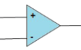
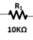
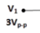
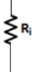
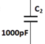
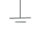
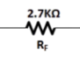
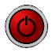

To Familiarize with 2nd order Sallen Key Active Low pass Filter and to measure its Frequency response
Main Circuit

      
1
2
3
4
5
6
7
8
9
10
11
12
13
14
15
16
17
18
INSTRUCTIONS
Connect the circuit elements as mentioned below 1-2 ,3-4 ,5-6, 6-7, 8-9, 10-11, 10-12, 9-13, 14-17, 17-18, 3-15, 16-17.(ex:-Drag from 1 and click on 2.)
3 volt p-p sinusoidal voltage is applied at the input. R1=10KΩ=R2, C1=C2=1000pF, RF=2.7KΩ. Put Ri= 4.7KΩ at first.
Obtain the cut off frequency F
o
and the Q-factor for the component values shown in Fig.(Ri=4.7KΩ)by clicking the Calculate button & Verify that the circuit corresponds to a low pass Butter worth filter where the Q-factor =1/√2,Where the input voltage is 3V Sinusoidal.
Switch on the oscilloscope by clicking "ON" button & click twice the Sine wave button to apply 3V sinusoidal voltage as input & click on the"Output" button to observe the output waveform with amplified output(V0).Channel & Channel2 button shows the input & output signals respectively,Dual, shows both of them.
Change the Frequency of input signal by the Frequency_Changer button for the values F
o
/10, F
o
/2, F
o
, 2F
o
,10F
o
& observe the corresponding output voltage signal.
Frequency_Changer :
Here the value of F
o
=15.915KHz or 15915Hz(according to the Main circuit).By default the value of frquency will come 1591Hz or 1.591KHz i.eF
o
/10. First double click this button exactly to change the frequency value F
o
/2 i.e. 7957Hz,then single click to obtain F
o
.Again click to have 2F
o
=31830Hz & single click last time to have 10F
o
=159150Hz.
Switch off the oscilloscope
Click on Table button to see observation Table & Plot button to see the frequency response plot(Gain(dB)vs.Frequency(KHz)).Click on Clear button to clear datas.
Set the value of Ri=10KΩ,Click on Calculate button to see the change in Q value. Repete the above steps.
F
o
in KHz
Q-factor
Ri in KΩ
OSCILLOSCOPE
Output(vo)v
Frequency(Hz)
voltage(Volt)
Volt(V)/div
Volt(V)/div
Position-Y
Channel 1
Position-Y
Channel 2
Position-X
Time(ms)/div
Sl. No.
Frequency(KHz)
Input Voltage
Output Voltage(V
o
)
V
o
/V
i
Gain(dB)